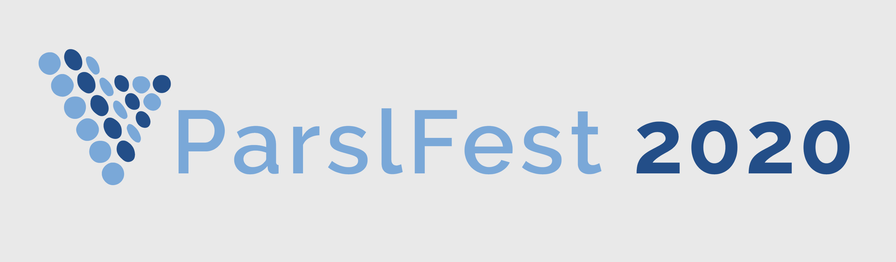

ParslFest 2020 - The Parsl Community Meeting
Building on the success of ParslFest 2019, we are hosting the second Parsl Community Meeting as a virtual meeting in two half-day sessions on October 6 and October 7, 2020.
The ParslFest meeting brings together researchers, developers, and cyberinfrastructure experts from around the country to discuss experiences using Parsl and to learn more about Parsl.
If you are interested in attending or presenting at (free) ParslFest 2020, please complete the registration form.
Stop by the ParslFest Gather Town to say hello!
Agenda
Tuesday, October 6, 9 am - 1 pm CDT (14:00 - 18:00 UTC)
9:00 am - Welcome! - Kyle Chard, University of Chicago9:20 am - Session 1
- Akila Ravihansa Perera, Enabling Economical Genome Analyses through Optimization and Scalable Workflows
- Amanda Wijewickarama, SciFlow project using Parsl to execute Scientific Workflows on HPC resources
- Dan Laney, ExaWorks: ECP Workflows Project
- Doug Thain, WorkQueue + Parsl
- Ioan Petri, Orchestrating knowledge in industrial edge environments
- Eamon Duede, Distance Matters in Science and Scholarship
11:00 am - Session 2
- Matthew Madany, Solving Hierarchical Neuroscience Probems with Parsl
- Ian Foster, Targeting SARS-CoV-2 with AI- and HPC-enabled Lead Generation
- Tom Glanzman, Advancing the Search for Dark Energy with Parsl and HPC
- Logan Ward, Colmena: Steering Computational Campaigns with Parsl and AI
- Jean-Baptiste Reynier, Developing a parallelized pipeline to analyze immune infiltration in cancer
12:15 - Tutorials
- Ben Clifford, Dependencies beyond the DAG
- Zhuozhao Li/Tim Shaffer, Fine-grain management of resources with WorkQueue
Wednesday, October 7, 1 pm - 5 pm CDT (18:00 - 22:00 UTC)
1:00 pm - Session 3- Adam Stephens, Managing execution of Dakota evaluations with Parsl"
- Kunkun Tang, Uncertainty Quantification with Parsl in Composite Material Modeling
- Ravi Madduri, Using Parsl in creating MaPPeRTrac
- Chandi Witharana, Automated mapping of Arctic permafrost tundra using sub-meter resolution satellite imagery
- Aarthi Koripelly, Extracting Scientific Information from Free Text Articles
- Ben Glick
2:30 pm - Session 4
- Kelly Rowland, Prototyping a Cromwell Parsl Backend
- Glen Hocky, Calculating molecular free energies using Parsl
- Engin Arslan, Streamlining computation and communication for distributed science workflows
- Lincoln Bryant, Jupyter on the Open Science Grid
- Rafael Ferreira da Silva, WorkflowsRI: Building an Infrastructure for Enabling Systematic Development and Research of Scientific Workflow Management Systems
3:45 - Tutorials
- Alvaro Vidal Torreira, Building modular Parsl workflows in Parallel Works
- Yadu Babuji, Redis for coordination and app-to-app communication
5:00 - Office Hours (stop by to chat with the Parsl team)
ParslFest 2019
The first Parsl community meeting brought together 50 researchers, developers, and cyberinfrastructure experts for a two-day meeting that included presentations and discussions on the first day and tutorials, advanced topics, and helpdesk sessions on the second day.
The ParslFest 2019 page includes the agenda and all presentations from ParslFest 2019.